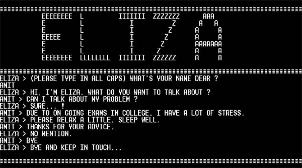

- Những bất cập tồn tại trong hệ thống dẫn đến ALPAC (Automatic Language
Processing Advisory Committee của Viện Hàn lâm khoa học – Hội đồng
nghiên cứu quốc gia) năm 1966. Báo cáo kết luận rằng MT đã không thể
đáp ứng những dự tính/ dự định đặt ra từ trước, dẫn đến những dự án
MT chỉ còn được tài trợ rất ít. Những nghiên cứu về MT chỉ được tiếp tục
rất lâu sau đó (cuối những năm 80) khi hệ thống dịch máy thống kê
đầu tiên (statistical machine translation systems) được tạo ra. Các công trình
nghiên cứu lý thuyết từ cuối 1960 đến đầu 1970 tập trung vào vấn đề
diễn giải nghĩa và tạo ra những hệ thống tính toán với nhiều phương pháp
khác nhau. Cùng với phát triển lý thuyết,nhiều mẫu thử nghiệm hệ thống
được phát triển để chứng minh hiệu quả của các nguyên tắc cụ thể. Tiêu
biểu nhất là Eliza - một trong những chatterbot đầu tiên, và cũng là
phần mềm đầu tiên có thể vượt qua được Turing test.

|
- 1970s: Nhiều lập trình viên bắt đầu viết những "conceptual ontologies",
thứ cấu trúc lại những thông tin thực tế thành những dữ liệu mà máy tính
có thể hiểu được. Cũng trong khoảng thời gian này, nhiều chatterbots được
viết bao gồm PARRY, Racter,và Jabberwacky.
- 1980s-1993 Cho đến thập niên 80, hầu hết các hệ thống NLP được dựa
trên những bộ quy tắc phức tạp được viết tay. Bắt đầu từ cuối những năm
80 nhưng thật sự đã có một cuộc cách mạng trong NLP với sự ra đời của
thuật toán Machine learning cho xử lí ngôn ngữ. Điều này có được là nhờ
cả sự tăng ổn định về năng lực tính toán của máy tính và sự thống trị bị
giảm dần của các lý thuyết về ngôn ngữ học của Chomsky - thứ mà nền
tảng chỉ là lý thuyết suông chống lại Corpus Linguistics - nền tảng cho
mối quan hệ của Machine learning và xử lí ngôn ngữ - cùng những gì liên
quan.Những thuật toán ML đầu tiên được sử dụng, như Decision Tree,
tạo ra những hệ thống với những quy tắc về if-then hết sức cứng nhắc -
tương tự như những quy định về viết tay cùng tồn tại lúc đó.

|